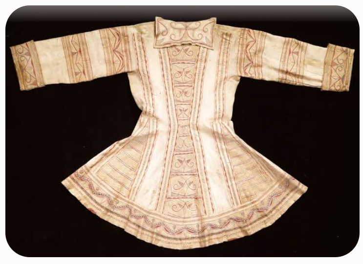
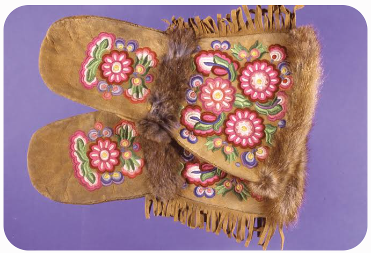
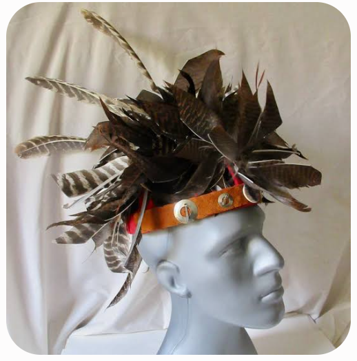

👘 #81 — Les habits des Premières Nations du Québec
L'art vestimentaire des onze nations · Au-delà du cuir et de la fourrure
Lorsque l'on évoque les vêtements traditionnels des Premières Nations et des Inuits du Québec, l'imaginaire collectif s'arrête souvent à de simples peaux d'animaux. Pourtant, chaque couture, chaque motif et chaque coiffe porte une histoire. Voici les secrets de fabrication, les symboles et les légendes qui se cachent derrière les habits des onze nations du territoire québécois : Abénaquis, Algonquins, Atikamekw, Cris, Hurons-Wendat, Innus, Malécites, Micmacs, Mohawks, Naskapis et Inuits.
Pour un panorama plus large sur le vêtement autochtone, voir #52 — Le vêtement autochtone. Article précédent de la série : #80 — Les routes d'eau et portages de Pierre le Fouineur.
1. Pourquoi le costume, et d'où vient-il ?
Le vêtement traditionnel naît d'une double nécessité : survivre à un climat extrême et honorer l'esprit de l'animal qui a donné sa vie pour vêtir le chasseur. Dans les sociétés autochtones, rien n'était gaspillé. Les femmes — véritables architectes du vêtement — utilisaient la peau des animaux abattus par les hommes. Selon la région, les matériaux variaient :
- Chez les Iroquoiens (Mohawks, Hurons-Wendat) : la peau de cerf de Virginie ou d'orignal était privilégiée pour sa souplesse, sa résistance et son imperméabilité. Une seule peau d'orignal pouvait suffire à vêtir un adulte.
- Chez les nations de la forêt boréale et de la toundra (Innus, Naskapis, Inuits, Cris) : le caribou et le phoque étaient essentiels pour affronter les hivers glaciaux. Les peaux étaient placées fourrure à l'intérieur, directement contre le corps, pour conserver la chaleur.
Pour coudre, les femmes utilisaient des aiguilles taillées dans des os d'animaux et les nerfs (tendons) d'élan ou de caribou en guise de fil — une matière extrêmement solide.
2. Composition et signification des motifs
Avant l'arrivée des Européens et des perles de verre, les vêtements étaient décorés avec des pigments naturels (ocre rouge, charbon, jus de petits fruits), des coquillages, des piquants de porc-épic et des poils d'orignal teints. L'ornementation n'était jamais purement esthétique : elle servait de talisman et de carte d'identité.
- Iroquoiens et Algonquiens du Sud : les femmes brodaient des motifs floraux, des plantes ou des cristaux de neige — signes de leur lien avec l'agriculture et la terre.
- Le manteau peint naskapi : entre le XVIIIe et le XIXe siècle, les Naskapis confectionnaient des manteaux en peau de caribou peints à la main avec des outils en os. L'Innu ou le Naskapi croyait que, pour que la chasse soit fructueuse, il devait rêver des motifs qui plairaient à l'esprit du caribou. Il racontait son rêve à sa femme, qui traduisait ces visions en dessins géométriques sur le manteau — incluant souvent le motif de la « montagne magique » d'où tous les caribous étaient censés provenir.

Manteau peint en peau de caribou : chaque motif traduit un rêve de chasse et une relation au territoire.
Le saviez-vous ? Ces manteaux naskapis sont aujourd'hui considérés comme des trésors mondiaux. Certains, jalousement conservés dans des musées ou vendus aux enchères, sont évalués à plus de 250 000 $.
3. À quel moment portaient-ils ces vêtements ?
Historiquement, l'habit variait radicalement selon la saison et l'occasion :
Au quotidien
En été, l'habillement était minimaliste. Les hommes mohawks ou hurons-wendat portaient un simple pagne de daim retenu par une ceinture ; les femmes, une jupe souvent composée de deux peaux cousues. Les enfants se promenaient fréquemment nus durant la saison chaude. En hiver, tout basculait : jambières (guêtres couvrant toute la jambe), mocassins rembourrés de fourrure et épaisses capes.
Les vêtements rituels
Certains vêtements n'étaient pas faits pour durer. Le manteau peint naskapi, par exemple, était conçu pour le rituel de la chasse et n'était porté qu'une seule fois.
Aujourd'hui — les regalia de pow-wow
Les regalia contemporains ne sont pas des déguisements, mais des habits cérémoniels sacrés. Ils mêlent traditions anciennes (cuir, os) et éléments modernes (rubans, tissus brillants) pour refléter l'identité personnelle et spirituelle du danseur.

Regalia de pow-wow : habit sacré, fruit d'un métissage assumé entre savoirs anciens et matériaux d'aujourd'hui.
4. La coiffure — extension de l'âme et du vêtement
Le vêtement d'une Première Nation ne s'arrête pas au col. La coiffure et les ornements de tête — souvent ornés de cylindres en os, de coquillages ou de cuivre — revêtaient une importance vitale. La chevelure était perçue comme une extension de l'esprit, de la force et de l'identité.
Les coiffes guerrières et le Gustoweh
Contrairement à l'image hollywoodienne de la grande coiffe de plumes d'aigle (propre surtout aux nations des Plaines), les Iroquoiens — Mohawks et Hurons-Wendat — portaient le Gustoweh : une charpente en lattes de frêne recouverte de plumes. La disposition des plumes d'aigle au sommet indiquait l'appartenance exacte à une nation (par exemple, trois plumes dressées pour l'une, une seule inclinée pour l'autre).

Le Gustoweh iroquoien : la disposition des plumes d'aigle indique la nation et le statut du porteur.
Porter des plumes d'aigle dans ses cheveux n'était pas un simple ornement : c'était une médaille d'honneur illustrant des exploits guerriers dont le porteur tirait une immense fierté. C'est précisément parce que les cheveux et les pratiques vestimentaires étaient le cœur de l'identité autochtone que les pensionnats ont, par la suite, systématiquement imposé des uniformes et coupé les cheveux des enfants — brisant volontairement ce lien millénaire. Voir Pensionnats indiens.